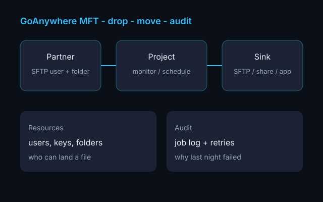
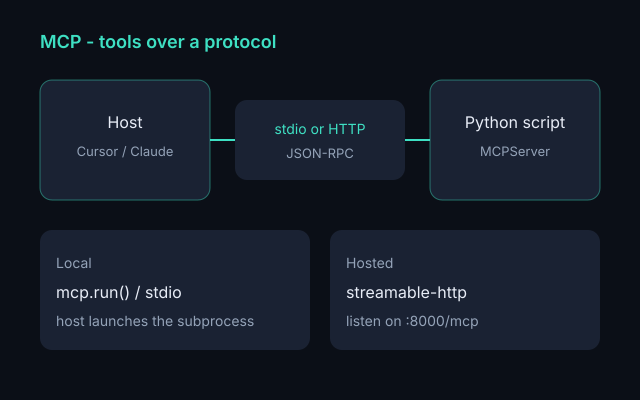
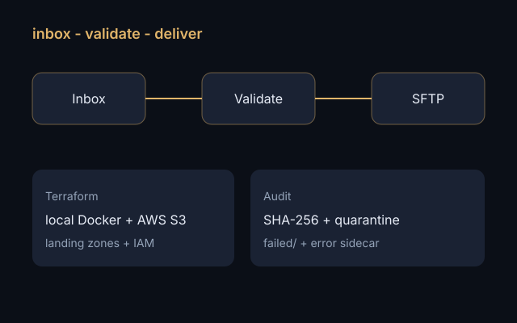

GoAnywhere MFT is a landing zone with a job log
Resources, projects, monitors, audit. How a partner drop actually moves — and what I open first when it does not.
Write-ups of the labs and platforms behind the work I do now — MFT, HL7, and giving agents real tools.

Resources, projects, monitors, audit. How a partner drop actually moves — and what I open first when it does not.

Give Cursor real tools from one Python file. stdio locally, Streamable HTTP when you host it.

Inbox, validate, transform to JSON, deliver over SFTP or locally, and write every attempt to an audit log.

Parse HL7 v2 into JSON and fail with a stable error code when MSH-10 is empty or an ADT has no PID.